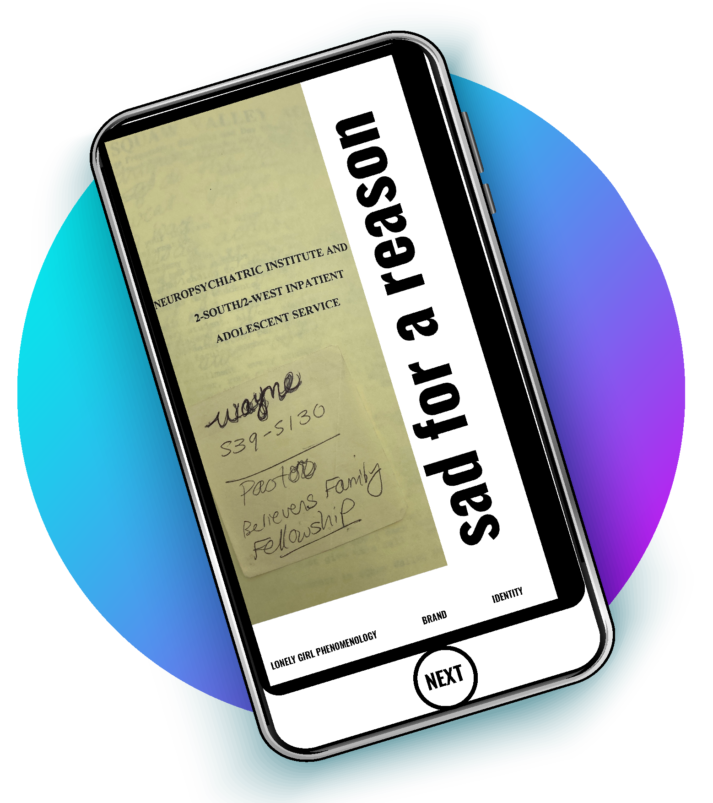

The salty Essaouira sea breeze billows through curtained windows, morning sunlight dancing across unmade bed. Yanick stares at me. I tilt my head in a question mark, unable to decipher his mood. ‘Isn’t it funny’, he says, ‘that I’m never going to see you again?’ I look for his usual impish grin, for something else behind this provocation, but his expression is point-blank. While I was too busy plotting our love story, he’s reached a decision. In one sentence this man has exiled me from his life. He’s just a cheap shot director writing a problem actress out of a reality series. The pain hits me in the guts. I disassociate—childhood trick of self-preservation. My disinhabited body walks into the bathroom where I regard myself in third person through the mirror: ruddy checks drenched with saltwater, snot dripping from nose, lower lip trembling, eyes frozen wide, cobweb hair. A shadow reflection. Ghostly me peers into glassed-over green-brown eyes and whispers, ‘I don’t want to be your whore.’ I say it again, louder, frightened by passion’s spectre. By what emotional abandonment does to me. I was just his cute little ‘bunny bun bun’, basking in the attention, the affection. Lured in to trust after he read to me from his journal, confided that he wanted to stop hurting people. I should have taken that confession as a warning, should have listened when he came inside me and whispered, ‘Danger’. ‘Jen, are you alright?’ Silence. ‘Jen?’ He’s looking for me, wondering where I went. I’ve retreated deep into freckled tortoise shell—into non-existence—hiding from the sting of this Scorpio. Yanick has perhaps exacted his revenge—misogyny perpetuated by bitter divorce—onto me. Refusing to meet his gaze, I slip into the shower. Water-blasted tears fall into the sudsy rinse and drain into the Atlantic Ocean towards home, or somewhere. I pack my rucksack with antique camel hair carpet, mosaic pottery and enough self-pity to drown an island. I wander the dusty streets of Essoueira like an apparition, shrouded in a façade of uncaring. Fuck him, I think. I don’t care, I try to fool myself. I negotiate narrow alleyways and meandering passageways in an attempt to elude the incoming tide of depression. The deeper I walk into the foggy souk, the more I collide with the torrent of emotion. My undisguised sorrow renders me invisible to touts, worshippers of blondes and hecklers alike. I didn’t expect to feel this way. I wanted to call the shots. I failed to communicate my true feelings and lost the game. The tour group leaves me behind. Yanick is gone.